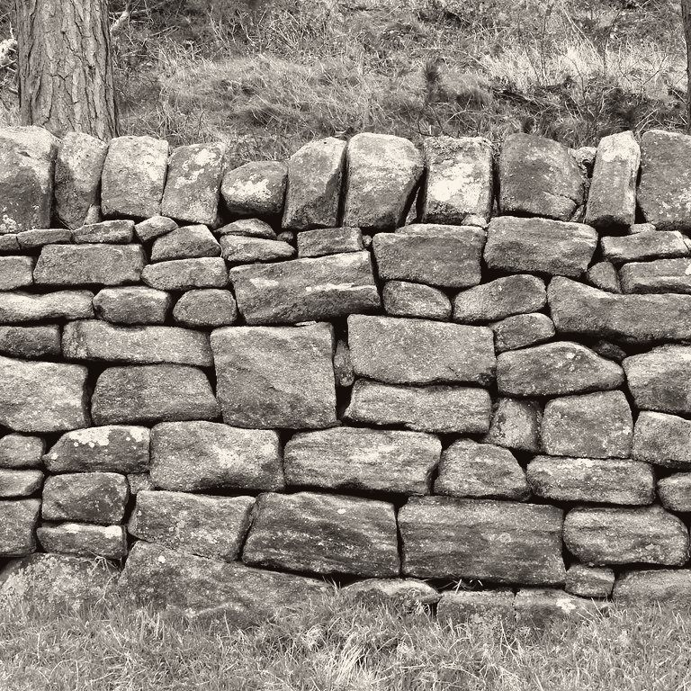
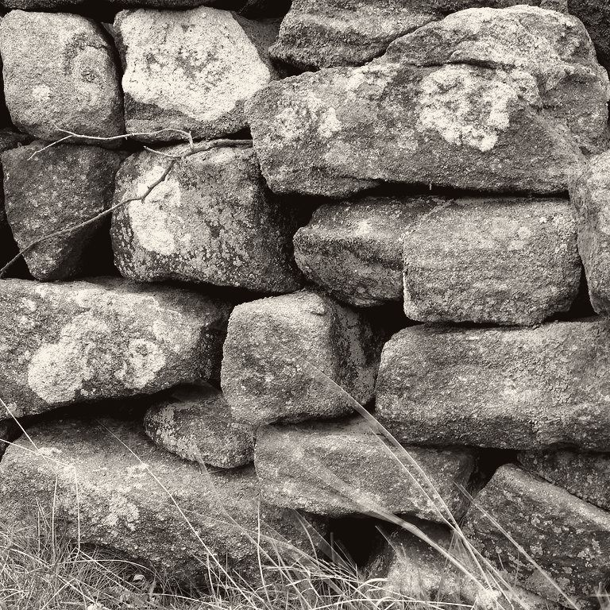
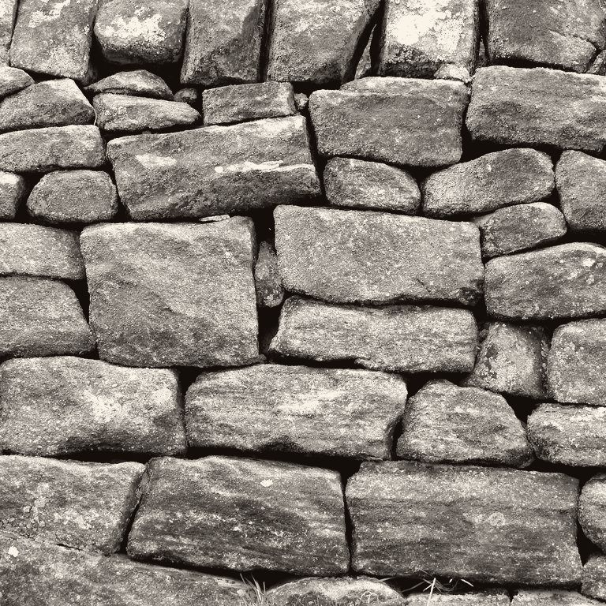

Stonemason · Oamaru and North Otago
Stone, cut to fit and laid to last.
Aroha builds dry stone walls, gate pillars, hearths and stone cladding around Oamaru and North Otago. She picks the stone, cuts it by hand, and does the laying herself. Site visit and written quote first, always.

What clients say
Sample reviews written for this style demo.
out of 5, from 29 Google reviews
-
FionaWestonGarden wall
“Our old boundary wall had slumped into the paddock. Aroha rebuilt it from the same stone, and you can't see where the new bit starts.”
-
CallumKakanuiGate pillars
“Two pillars at the end of the drive. She came to look at the gate first, drew them up on the back of an envelope, and they stand dead plumb.”
-
MargaretOamaruHearth
“Built a stone hearth in our lounge. Tidy about it, no dust through the house, and she showed me how to seal it.”
-
DougalMahenoRepair
“Fixed a section of wall the stock had knocked down and re-pointed the old steps while she was here. Fair and straight.”
Stonework
New walls and repairs in local stone, from a garden edge to a farm boundary. Aroha cuts, dresses and lays everything herself.
-
Dry stone walls
Boundary and garden walls laid without mortar, in local stone.
-
Gate pillars
Square, plumb pillars with a capstone, built to take a heavy gate.
-
Hearths and fireplaces
Stone hearths and surrounds, cut to fit your wall and your burner.
-
Stone cladding
Cut stone fixed to house walls, chimneys and entranceways.
-
Steps and paths
Cut stone steps and flagged paths with a firm, level bed.
-
Repairs and pointing
Fallen sections rebuilt and old mortar raked out and pointed.
How a wall goes up
A dry stone wall is a section: a trench, a firm footing, two faces that lean in, and a core packed tight. It stands because of how it's put together, not what holds it.
What holds it up
- A trench dug to firm ground, with the biggest stones in the bottom course
- Faces that lean in, so the wall is wider at the base than at the top
- Small stone packed tight in the middle, called the hearting
- A long through-stone every metre or so, tying the two faces together
- Coping stones set on edge along the top, to lock the courses
- 01
Visit
Aroha walks the line, checks the ground and takes measurements.
- 02
Choose stone
Local stone matched to your house, or reclaimed from the old wall.
- 03
Cut and lay
Hand-dressed stone, laid course by course with the faces checked.
- 04
Finish
Coping set, rubble carted away and the site left tidy.
Recent work
Photos are stand-ins for this sample.


Checked against a line, not by eye.
Every face is set to a string line and every pillar to a level. If a stone doesn't sit, Aroha cuts it again rather than packing it.
Call ArohaWhere we work
Based in Oamaru. Weston, Kakanui and Maheno as standard, and further up and down the coast for pillars and bigger walls, by arrangement.
Oamaru and its suburbs, Weston, Kakanui and Maheno. Hampden, Waimate, Palmerston and the Waitaki valley by arrangement.
- Oamaru, Weston0–6 km
- Kakanui10 km
- Maheno12 km
- Waimate45 km, by arrangement
- Palmerston55 km, by arrangement
Ask for a quote
Call or text Aroha. A photo of the site and a rough length is enough to start.
- Mon–Fri
- 7:30 am – 5:00 pm
- Saturday
- Site visits, by booking
- Quote back
- Within 1 week